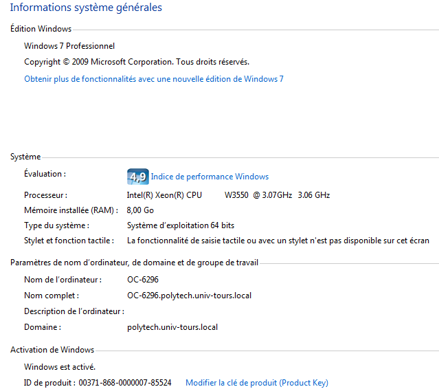

Quick start
SHANG Lei - shang.france@gmail.com
Ce document est créé pour expliquer ce qui a été fait par SHANG Lei dans son PFE: Problème de consolidation de serveurs (hors ligne). On va vous expliquer que sont les éléments existants dans le dossier et comment faire pour continuer le travail.
Context
Cf le rapport du projet qui est dans le dossier doc.
Notez qu’il y a une partie de travail qui a été réalisé par mon encadrant M. Vincent T’Kindt et un ancien étudiant Cyrille PICARD dans son PFE en 2012-2013.
Structure du dossier
- Archive: Les éléments en entrée de mon PFE, tels que le rapport et les programmes réalisés par Cyrille PICARD et M. Vincent T’Kindt, le papier sur la modélisation du problème, le logiciel Cplex et une librairie C++ pour faire le Preprocessing.
- Doc: Les documents que j’ai créé pendant ce projet, notamment le rapport du projet avec le source LaTeX, ainsi que les transparents des présentations.
- Programmes: Les programmes (projets Visual Studio 2010) principals du projet, y compris:
- TimeIndexedFormulation: Le programme qui résout le problème de façon exacte: en utilisant le solveur Cplex.
- H1: La première méthode heuristique créée par Cyrille PICARD puis corrigée et complétée par SHANG Lei.
- H2: La deuxième méthode heuristique qui est basée sur le solveur Cplex avec des paramètres heuristiques mis en place.
- Preprocessing: Le programme qui ajoute le Preprocessing du modèle à la base de TimeIndexedFormulation.
- Testeurs: Dossier qui contient tous les programmes de tests. Pleins de Testeurs ont été créés pendant le projet mais les 2 plus importants sont:
- TesteurExactH1H2: qui est comme son nom indique, pour comparer la méthode exacte et les 2 méthodes heuristiques.
- TestCut2: qui est le testeur pour tester la performance des coupes dans le Preprocessing, surtout pour la coupe 2 (1-cuts). Le code sur les autres coupes sont aussi compris.
- Tests: contient un fichier hyper impportant: Readme.html qui va vous expliquer à quoi sert ce dossier… :P
Environnement du développement
- Windows 7, 64bit.
- Visual Studio 2010. Les programmes sont créés sous VS2010 donc il faut l’installer avec le support du développement C++.
- Cplex 12.6. Certaines programmes ont utilisé la librairie du solveur Cplex pour résoudre le problème. Le paquet d’installation se trouve dans le dossier Archive, il faut l’installer dans le répertoire par défaut. Autrement dit, il faut qu’on trouve un fichier nommé README.html dans le répertoire “C:\Program Files (x86)\IBM\ILOG\CPLEX_Studio126”.
Environnement de tests
Les tests ont été lancés sur 2 machines qui possèdent les mêmes caractéristiques dans la salle OC. Ce sont la machine OC-6296 et la OC-6295. Pour info:
